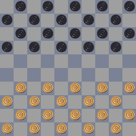
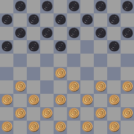
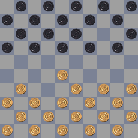

PDN Extensions¶
Embedded commands¶
Comments in PDN files may have embedded commands. Embedded
commands may appear anywhere inside comments, and they have the
following syntax: [%COMMAND VALUE], where COMMAND identifies
the command and VALUE is command-specific syntax.
clk, mct, egt and emt command¶
The following commands are taken from [DGT]:
Command |
Description |
|---|---|
clk |
Time displayed on a clock (remaining time) |
mct |
Time displayed on a clock (elapsed time) |
egt |
Elapsed game time |
emt |
Elapsed move time |
The values of the clk, egt, emt and mct commands are in h:mm:ss format.
Usually clk values come from a digital clock, while mct values come from
a mechanical clock.
Examples
1. 31-26 {[%clk 1:55:21]}
clock command¶
The clock command is an extension of the clk command.
An embedded clk command should match with the following regular expression:
\[%clock\s*(([wWbB])(\d{1,2}:\d\d:\d\d)\s*)(([wWbB])(\d{1,2}:\d\d:\d\d)\s*)?\]
Examples
1. 31-26 {[%clk w0:00:10 B0:00:03]}
23.44-39 {[%clk 1:05:23]} 18-23 {Optional leading comments
[%clock 0:49:11] optional trailing comments}
In cases like this the clock time is connected to the preceding move. It is
the preferred way of specifying clock times during live recordings with
electronic boards. A clock command may contain one or two clock times. Each
of them may be preceded by a w or a b to denote the clock time for
white or black. If uppercase is used, it means that the clock for this player
is running.
Setup commands¶
The PDN grammars presented in this document contain an extension for doing setups of a position anywhere in the game. The motivation for having this command is threefold:
It gives a well-defined way to handle illegal moves, that happen occasionally in tournament practice.
They can be used to handle move recognition failures of electronic board software.
In game analysis it is common to make side steps to different positions, for example to a similar position that has occurred before. The setup command allows to incorporate these side steps as normal variations starting with a setup.
A setup command is a FEN setup command surrounded by forward slashes. Note that this extension is not backward compatible with older versions of the PDN standard. This is an intentional choice, since the moves which appear after a setup are ill-defined if the setup is ignored. Setups are changes on the board, and so they should be on the same level as moves. It is therefore not a good idea to model them as embedded commands inside comments.
Null moves
For programmers, null moves are sometimes useful to denote an empty move. A possible notation for a null move, proposed by Gérard Taille, is
/FEN "B::"/
Examples
1.31-26 17-21 /FEN "B:B1-16,18-21:W26,28,33-50"/
{ White forgot to make a capture and played 32-28 instead }
Suppose a game starts with an illegal move, resulting in the following sequence of positions:
  
This can be encoded using
/FEN "W:W31-50:B1-20"/
/FEN "B:W28,31,33-50:B1-18,20"/
01... 14-19
The setup of the initial position is required here. If it was omitted, the second setup would be taken as initial position of the game.